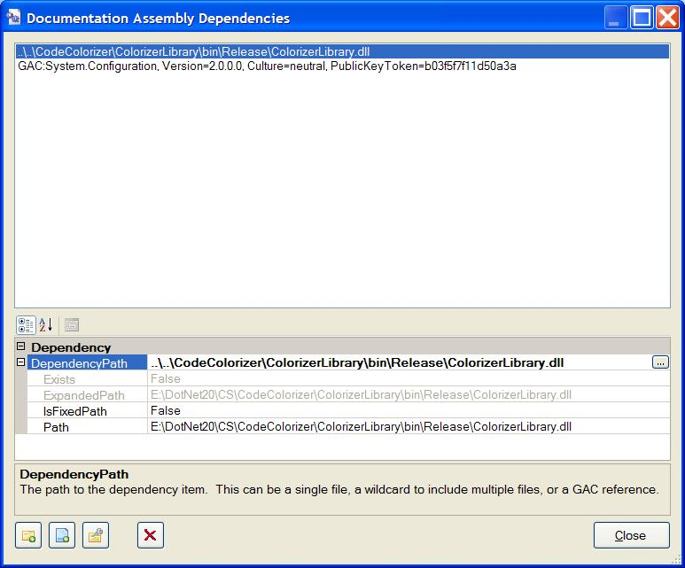

The Build Category Properties
The following properties are available in the Build category. These
control the build process.
This property is used to specify whether or not intermediate files created
during the build are kept after a successful build or are purged. The
default is true to purge the files. If not purged, you will find the files
in a .\Working folder under the project's output path folder. Files
that are placed there include the build scripts, configuration files, and
the HTML help compiler project output files (scripts, art, HTML pages, the
HTML help project, etc). The intermediate files are always retained if the
build fails so that you can examine them to find the cause if necessary.
This option allows you to configure build components that support the
Sandcastle Help File Builder's plug-in method to interactively set their
options. See the Custom Build
Components topic for information on the ones supplied with the help file
builder.
This property can be used to specify a list of dependent assemblies and/or
folders containing dependent assemblies for use by the MRefBuilder
tool when it generates reflection information for the documentation
assemblies. Currently, MRefBuilder does not resolve references to
all assemblies used by a target, especially those found in the Global
Assembly Cache (GAC). As such, it needs a pointer to find the files and
load them when needed (the /dep command line option). This property
uses a collection editor that lets you choose folder paths, individual
files, or GAC references to define the dependencies.

By specifying the dependent assemblies or the folders containing them,
the build process can create a folder containing the dependencies for
MRefBuilder to use. Paths to the assemblies can be absolute or
relative. Relative paths are assumed to be relative to the project folder.
In addition to file and folder dependencies, you can also select
assemblies from the GAC. This is useful in situations where an assembly
only appears in the GAC and does not have an easily located copy elsewhere
on disk. Entries selected from the GAC are prefixed by the identifier
"GAC:" and show the fully qualified name rather than a file path. At
build-time, the GAC is queried and the necessary assemblies are copied from
it to the dependencies working folder.
This property allows you to specify to which .NET Framework version the
documentation links for system types should point. The default is to use
the most recent .NET version available on the system (currently 2.0.50727).
In theory, it is possible to also use Sandcastle to produce help files for
.NET 1.1 assemblies. I have not had a chance to confirm that this property
actually works as expected. I will provide more details about this
property once I have had a chance to test it more thoroughly.
This property lets you specify the type of help file to build (HTML Help 1.x,
HTML Help 2.x, a website, or various combinations of the three options). The
default is to produce an HTML Help 1.x format file.
Be aware that if an option is selected that produces a website, the
output folder will be cleared of all of its current content before the web
site content is copied to it. When producing a help file alone, the output
folder is not cleared. When producing a website, the following additional
files are copied to the root of the output folder.
- *.gif - Several GIF image files are copied that represent the
collapsed, expanded, and item nodes in the table of content tree view
and the Expand All, Collapse All, and Synch to Content options.
- Index.html - This page is used to contain the frameset for
the table of content and the currently selected content page.
- TOC.css - This is the style sheet used for the table of
content frame page.
- TOC.js - This JavaScript file contains the code used to
implement a basic tree view with collapsible and expandable nodes and is used
by the table of content frame page.
- TOC.html - This is the template file used to contain the
table of content information. The template is generated during the build
and will contain the same entries as the help file's table of content in a
matching layout.
This property is present to fix a bug that I ran across. When generating
documentation into one help file for multiple assemblies that contain one
or more common classes compiled into each of them, you end up with
duplicate entries in the table of content and help entries for the common
classes. You also get duplicate entries in the namespace help page for
each namespace associated with the common classes. To fix this for problem
for now, I added this property that causes the builder to strip out
duplicate properties from the reflection.org file generated by
MRefBuilder. It is set to true by default. If you think it may be
causing problems, set it to false. If this is fixed in a later CTP, I will
remove this option.